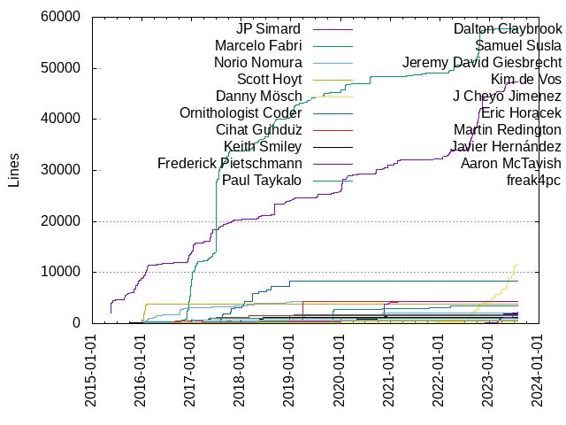
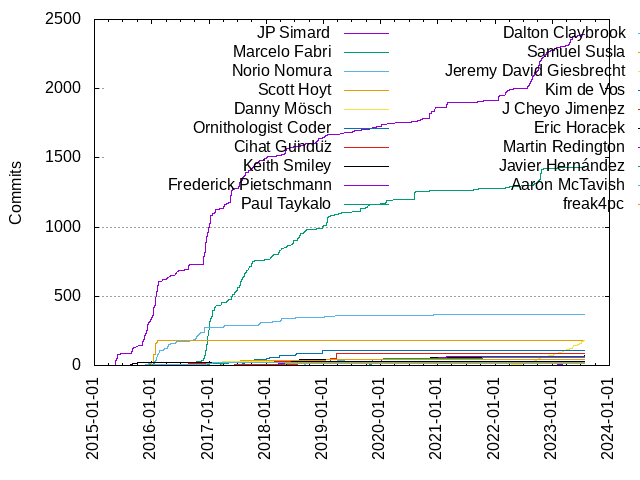

Authors
| Author | Commits (%) | + lines | - lines | First commit | Last commit | Age | Active days | # by commits |
|---|
| JP Simard | 2395 (37.72%) | 47391 | 68123 | 2015-05-16 | 2023-07-09 | 2975 days, 20:55:54 | 565 | 1 |
| Marcelo Fabri | 1433 (22.57%) | 57686 | 20453 | 2015-11-27 | 2023-05-11 | 2721 days, 16:16:52 | 410 | 2 |
| Norio Nomura | 366 (5.76%) | 4413 | 2863 | 2015-11-10 | 2020-12-04 | 1850 days, 12:40:10 | 118 | 3 |
| Scott Hoyt | 183 (2.88%) | 3781 | 2175 | 2015-12-27 | 2016-02-05 | 40 days, 4:23:14 | 22 | 4 |
| Danny Mösch | 182 (2.87%) | 11686 | 8268 | 2021-11-29 | 2023-07-25 | 603 days, 1:42:11 | 113 | 5 |
| Ornithologist Coder | 109 (1.72%) | 8402 | 1134 | 2017-05-21 | 2018-09-02 | 468 days, 21:27:05 | 51 | 6 |
| Cihat Gündüz | 85 (1.34%) | 4315 | 1881 | 2017-06-03 | 2020-06-11 | 1103 days, 22:48:31 | 21 | 7 |
| Keith Smiley | 69 (1.09%) | 2232 | 680 | 2015-05-19 | 2023-07-26 | 2990 days, 2:50:51 | 44 | 8 |
| Frederick Pietschmann | 62 (0.98%) | 4388 | 1528 | 2018-03-11 | 2021-02-26 | 1083 days, 4:34:06 | 30 | 9 |
| Paul Taykalo | 60 (0.95%) | 3532 | 2553 | 2019-02-20 | 2022-03-23 | 1126 days, 13:57:24 | 27 | 10 |
| Dalton Claybrook | 43 (0.68%) | 2111 | 510 | 2018-08-30 | 2020-11-20 | 813 days, 3:51:03 | 20 | 11 |
| Samuel Susla | 40 (0.63%) | 1066 | 166 | 2017-02-26 | 2019-01-17 | 690 days, 2:59:33 | 18 | 12 |
| Jeremy David Giesbrecht | 28 (0.44%) | 221 | 187 | 2017-03-25 | 2017-04-04 | 10 days, 1:01:15 | 3 | 13 |
| Kim de Vos | 27 (0.43%) | 1799 | 799 | 2017-03-01 | 2023-04-02 | 2222 days, 15:00:58 | 13 | 14 |
| J Cheyo Jimenez | 27 (0.43%) | 1585 | 350 | 2016-07-10 | 2017-07-04 | 359 days, 0:23:08 | 20 | 15 |
| Eric Horacek | 26 (0.41%) | 1210 | 213 | 2018-04-01 | 2018-06-10 | 69 days, 23:21:09 | 11 | 16 |
| Martin Redington | 25 (0.39%) | 2258 | 379 | 2022-09-21 | 2023-07-26 | 308 days, 2:50:07 | 22 | 17 |
| Javier Hernández | 19 (0.30%) | 957 | 331 | 2016-10-22 | 2017-04-30 | 190 days, 4:06:10 | 14 | 18 |
| Aaron McTavish | 19 (0.30%) | 668 | 122 | 2016-01-08 | 2017-01-19 | 376 days, 23:04:26 | 10 | 19 |
| freak4pc | 18 (0.28%) | 566 | 288 | 2016-07-26 | 2018-05-06 | 649 days, 11:57:32 | 5 | 20 |
These didn't make it to the top: David Catmull, Daniel Metzing, github-actions[bot], Jamie Edge, Cristian Filipov, Angel Garcia, Rafael Machado, Michael Welles, Elliott Williams, Timofey Solonin, Reimar Twelker, Cihat Gündüz, Chris Eidhof, akirahrkw, Noah McCann, Maz Jaleel, Kane Cheshire, Denis Lebedev, Joshua Kaplan, Otavio Cordeiro, Danny Moesch, Blaise Sarr, Noah Gilmore, Matthew Healy, Matt Rubin, t_hayashi, Jonas Wippermann, Johnykutty Mathew, John Szumski, Igor Palaguta, Fabian Ehrentraud, Aaron Crespo, woxtu, rakaramos, dependabot[bot], Yasuhiro Inami, Stéphane Copin, Sarr Blaise, Lars Lockefeer, Jeffrey, Daniel Beard, Ben Staveley-Taylor, Ash Furrow, rounak, Syo Ikeda, Olivier Halligon, Marcel Jackwerth, Austin Belknap, Сергей Галездинов, rohan, p-x9, Xaver Lohmüller, Tom Quist, Seth Friedman, Philip Webster, Michael Helmbrecht, Max Härtwig, David Rönnqvist, Andrea Mazzini, jsloop, Yuki Oya, Vojta Stavik, Siarhei Fedartsou, Nigel Flack, Mickael Morier, Michael Welles, Manabu Nakazawa, John Estropia, Ivan Vavilov, Iulian Onofrei, George Woodham, Diogo Guimaraes, Colton Schlosser, Artem Garmash, Anders Hasselqvist, 417-72KI, Zev Eisenberg, Yusuke Ohashi, Sven Münnich, Nagasawa Hiroki, Michael Skiba, Ikko Ashimine, Gilles Grousset, Daniel Duan, Craig Siemens, Bjarke Hesthaven Søndergaard, Bill Bagdon, Ben Asher, Allen Zeng, richard.turton, dirtydanee, crimsonwoods, cfiken, Twig, Tony Arnold, Steven, Savio Mendes de Figueiredo, Samuel Giddins, Rounak, Raphael Randschau, Oleg Kokhtenko, Matthew Remmel, MarkoPejovic, Jon Shier, EyreFree, Ethan Wong, Cyril Lashkevich, Brian Hardy, Bas Broek, Austin Lu, Andrew Tetlaw, Alex Culeva, Aaron Daub, Šimon Javora, yhkaplan, timcmiller, r-plus, iressler, iliaskarim, hank121314, dbeard, coffmark, antonnazarov, a-25, Zsolt Kovács, Zsolt Kovacs, Yurii Kotov, Yonas Kolb, Vasiliy Kattouf, Steffen Matthischke, Sara Tavares, Samuel E. Giddins, Ryan Cole, Ruotger Deecke, Patrick A Wallace, Otávio Lima, Neil Gall, Nealon Young, Natan Rolnik, Mike Ciesielka, Michael Gray, Max Härtwig, Mauricio Hanika, Lukas Schmidt, Liquidsoul, Kyle Bashour, Kotaro Suto, Kasra Babaei, Juozas Valančius, Julio Carrettoni, Josep Rodríguez, Jonas Schmid, Janak Shah, Gio Lodi, Francisco Javier Trujillo Mata, Eric Bailey, David Potter, Dave Lee, Dan Loman, DCherish, Cody Winton, Christian Mitteldorf, Bryan Ricker, Bruno Guidolim, Brian Partridge, Berik Visschers, Benny Wong, Benjamin Otto, Ben Fox, Atsuto Yamashita, Almaz Ibragimov, Adam Wolf, 강수진, とんとんぼ, 변우식, wbagdon, uhooi, toshi0383, tobias, tillhainbach, sarastro-nl, raduciobanu002, orsanawwad, o(￣へ￣)o, mknabbe, michallaskowski, leogdion, ldindu, kyounh12, kid cherish, heshamsalman, grosem, dahlborn, chrisjf, changmin lee, ch-u, bootstraponline, azure-pipelines[bot], Zach Jaquish, ZX, Yuya Tanaka, Yusuke Goto, YoungBin Lee, Xaver Lohmüller, Wolfgang Lutz, Will Fleming, Víctor Pimentel, Varun P M, Valentin Knabel, Tony Li, Tom Wilkinson, Tieme van Veen, Tieda, Thomas Goyne, Thi Doãn, Takuhiro Muta, Taha Bebek, Sven Münnich, Steven Grosmark, Steve Madsen, Stephen Williams, Stefan Herold, Stanislav Dombrovsky, Spencer Kaiser, Sohail Khanifar, Skoti, Simon Støvring, Siarhei Fiedartsou, Shipeng Xu, Sergei, Sebastian Grail, Sean Hussey, Sam Soffes, Sam Rayner, Sam, Ryoya Ito, Ryan Demo, Ryan Booker, Ryan Aveo, Ruby, Roman Stetsenko, Roger Oba, Robin Kunde, Richard Hodge, Quinn Taylor, Pyry Jahkola, Petteri Huusko, Paul Williamson, Patrick Balestra, Patrick, Or Eliyahu, Optional Endeavors, Nikolaj Schumacher, Niil Öhlin, Niil, Nathan Van Fleet, Naruki Chigira, Nadohs, NachoSoto, Mikhail Monakov, Mikael Konradsson, Michał Kałużny, Michael S, Michael Nguyen, Michael Henry, Michael Ciesielka, Maurício Hanika, Matthew Ellis, Matt Thompson, Matt Taube, Mathias Schreck, Mateusz Matrejek, Maru, Martin Hosna, Markus Gasser, Marc O'Morain, MangoMade, Maksym Grebenets, M. Porooshani, László Kustra, Lukyanov Fedor, Luis Valdés, Liam Nichols, Liam, Kyle Fleming, Krzysztof Rodak, Kris Kline, Koki Hirokawa, Kevin Randrup, Kepler Sticka-Jones, KelaKing, Kaitlin Mahar, Josh Friend, Jorge Bernal, John Mueller, John Buckley, Johannes Ebeling, Jimmy Arts, Jim Puls, Jim Hildensperger, Jerry, Jeffrey Blagdon, Jay Moore, Javier Soto, Jan-Otto Kröpke, Jake Craige, Jaehong Kang, J. Cheyo Jimenez, Ivan Vorobei, Isaac Greenspan, Ilias Karim, Hossam Ghareeb, Hiroki Nagasawa, Hilton Campbell, Henry, Haocen Jiang, Hannes Ljungberg, HaloZero, HA Pors, Greg, Goran Blažič, Gonzalo RH, Goktug Yilmaz, Gabriel Féron, Fumito Nakazawa, Frederick Kellison-Linn, Frank Manns, Francisco Costa, Frad LEE, Felix Krause, Federico Zanetello, Ezequiel França, Erik Strottmann, Erik Aigner, Eric-Paul Lecluse, Eric Amorde, Dylan Maryk, Dylan Bruschi, DwayneCoussement, Donald Ritter, Dominic Freeston, Dmytro Zozulia, Dennis Hong, Davide Sibilio, David Steinacher, David Paschich, David Harris, David Davies-Payne, Danilo Bürger, Daniel Rodríguez Troitiño, Dani Vela, César Pinto Castillo, Christian Panetta, Christian Clauss, Chris White, Chris Hale, Chris Brakebill, Carl Hill-Popper, Brian Lu, Brandon Kobilansky, Bradley Walters, Blair McArthur, Benjamin Kramer, Benedek Kozma, Ben Davis, Ankit Aggarwal, Andyy Hope, Andrés Cecilia Luque, Andrius Janauskas, Andrew Rahn, Andrew Montgomery, Alvar Hansen, Alpa Dedhia, Allen Wu, Alexander Lash, Alexander Chapliuk, Adrian Bolinger, Adonis Peralta, Adam Felix, 1in1
Only top 20 authors shown
Only top 20 authors shown
| Month | Author | Commits (%) | Next top 5 | Number of authors |
|---|
| 2023-07 | Danny Mösch | 24 (60.00% of 40) | JP Simard, Martin Redington, Kasra Babaei, とんとんぼ, Matt Thompson | 9 |
| 2023-06 | Danny Mösch | 11 (34.38% of 32) | JP Simard, woxtu, Martin Redington, Iulian Onofrei, Keith Smiley | 6 |
| 2023-05 | Danny Mösch | 27 (43.55% of 62) | JP Simard, woxtu, Kyle Bashour, kid cherish, Simon Støvring | 12 |
| 2023-04 | JP Simard | 44 (69.84% of 63) | Danny Mösch, Keith Smiley, YoungBin Lee, Sven Münnich, Martin Redington | 12 |
| 2023-03 | Danny Mösch | 14 (38.89% of 36) | Martin Redington, JP Simard, 강수진, dependabot[bot], Tony Arnold | 8 |
| 2023-02 | JP Simard | 8 (25.81% of 31) | Danny Mösch, Marcelo Fabri, Martin Redington, Vasiliy Kattouf, Thi Doãn | 11 |
| 2023-01 | JP Simard | 20 (45.45% of 44) | Danny Mösch, dependabot[bot], Keith Smiley, kyounh12, github-actions[bot] | 9 |
| 2022-12 | JP Simard | 15 (38.46% of 39) | Danny Mösch, github-actions[bot], Martin Redington, Marcelo Fabri, Julio Carrettoni | 9 |
| 2022-11 | JP Simard | 42 (58.33% of 72) | Danny Mösch, github-actions[bot], Marcelo Fabri, Tony Arnold, Steffen Matthischke | 10 |
| 2022-10 | Marcelo Fabri | 100 (46.73% of 214) | JP Simard, Danny Mösch, github-actions[bot], Vasiliy Kattouf, Keith Smiley | 8 |
| 2022-09 | JP Simard | 41 (52.56% of 78) | Marcelo Fabri, Danny Mösch, tillhainbach, dahlborn, Ryan Cole | 9 |
| 2022-08 | JP Simard | 69 (76.67% of 90) | Danny Mösch, Sara Tavares, Kotaro Suto, sarastro-nl, chrisjf | 9 |
| 2022-07 | JP Simard | 20 (60.61% of 33) | Danny Mösch, DCherish, Taha Bebek, Steve Madsen, Ruby | 9 |
| 2022-06 | Danny Mösch | 7 (58.33% of 12) | Marcelo Fabri, Liam, Koki Hirokawa | 4 |
| 2022-05 | Marcelo Fabri | 3 (42.86% of 7) | Danny Mösch, Jaehong Kang, Dennis Hong | 4 |
| 2022-04 | JP Simard | 8 (38.10% of 21) | Marcelo Fabri, Danny Mösch, coffmark, dependabot[bot], Ryan Cole | 7 |
| 2022-03 | JP Simard | 39 (63.93% of 61) | Marcelo Fabri, Danny Moesch, Paul Taykalo, Juozas Valančius, Michael Henry | 9 |
| 2022-02 | JP Simard | 4 (44.44% of 9) | tobias, Takuhiro Muta, Natan Rolnik, HA Pors, Greg | 6 |
| 2022-01 | JP Simard | 30 (68.18% of 44) | Danny Moesch, Ikko Ashimine, Francisco Javier Trujillo Mata, grosem, Steven | 10 |
| 2021-12 | Ethan Wong | 2 (50.00% of 4) | JP Simard, Ezequiel França | 3 |
| 2021-11 | JP Simard | 5 (41.67% of 12) | iressler, Kaitlin Mahar, Ikko Ashimine, Hannes Ljungberg, Danny Mösch | 8 |
| 2021-10 | Paul Taykalo | 4 (40.00% of 10) | JP Simard, uhooi, Marcelo Fabri, Artem Garmash | 5 |
| 2021-09 | Marcelo Fabri | 6 (30.00% of 20) | JP Simard, Ben Fox, Atsuto Yamashita, Wolfgang Lutz, Paul Taykalo | 8 |
| 2021-08 | Marcelo Fabri | 3 (42.86% of 7) | Kane Cheshire, iressler, Adam Wolf | 4 |
| 2021-07 | dependabot[bot] | 1 (33.33% of 3) | Ikko Ashimine, Adam Wolf | 3 |
| 2021-06 | Steven Grosmark | 1 (50.00% of 2) | Marcelo Fabri | 2 |
| 2021-05 | Kane Cheshire | 11 (44.00% of 25) | p-x9, Marcelo Fabri, raduciobanu002, Valentin Knabel, Steven | 9 |
| 2021-04 | Marcelo Fabri | 5 (55.56% of 9) | Keith Smiley, JP Simard, Iulian Onofrei, Dylan Maryk | 5 |
| 2021-03 | JP Simard | 14 (87.50% of 16) | dependabot[bot], Stephen Williams | 3 |
| 2021-02 | JP Simard | 23 (50.00% of 46) | Otavio Cordeiro, Frederick Pietschmann, Gio Lodi, leogdion, László Kustra | 11 |
| 2021-01 | JP Simard | 3 (33.33% of 9) | Otavio Cordeiro, Frederick Pietschmann, dependabot[bot], Thomas Goyne | 5 |
| 2020-12 | JP Simard | 27 (58.70% of 46) | Frederick Pietschmann, richard.turton, Keith Smiley, Yurii Kotov, Norio Nomura | 7 |
| 2020-11 | JP Simard | 47 (48.96% of 96) | Noah Gilmore, Marcelo Fabri, Keith Smiley, Frederick Pietschmann, Seth Friedman | 18 |
| 2020-10 | mknabbe | 1 (16.67% of 6) | hank121314, Sam, Paul Taykalo, Keith Smiley, Iulian Onofrei | 6 |
| 2020-09 | JP Simard | 19 (70.37% of 27) | Seth Friedman, Lukas Schmidt, hank121314, Sven Münnich, Ryan Demo | 7 |
| 2020-08 | Marcelo Fabri | 56 (72.73% of 77) | JP Simard, cfiken, Keith Smiley, Zev Eisenberg, Janak Shah | 8 |
| 2020-07 | changmin lee | 1 (33.33% of 3) | JP Simard, Danny Moesch | 3 |
| 2020-06 | Keith Smiley | 2 (28.57% of 7) | Liam Nichols, JP Simard, Ilias Karim, Frederick Pietschmann, Cihat Gündüz | 6 |
| 2020-05 | JP Simard | 2 (33.33% of 6) | Tieda, Noah Gilmore, Mateusz Matrejek, Keith Smiley | 5 |
| 2020-04 | JP Simard | 4 (36.36% of 11) | antonnazarov, Yusuke Goto, Tieme van Veen, Keith Smiley, Cihat Gündüz | 7 |
| 2020-03 | Marcelo Fabri | 5 (50.00% of 10) | JP Simard, Ryoya Ito, Adrian Bolinger | 4 |
| 2020-02 | Marcelo Fabri | 24 (63.16% of 38) | JP Simard, Zsolt Kovacs, Zsolt Kovács, Zev Eisenberg, Paul Taykalo | 10 |
| 2020-01 | JP Simard | 18 (42.86% of 42) | Marcelo Fabri, 417-72KI, timcmiller, Paul Taykalo, Max Härtwig | 12 |
| 2019-12 | JP Simard | 5 (62.50% of 8) | a-25, Optional Endeavors, Dave Lee | 4 |
| 2019-11 | Paul Taykalo | 29 (58.00% of 50) | JP Simard, Norio Nomura, Frederick Pietschmann, Sven Münnich, Sven Münnich | 9 |
| 2019-10 | Marcelo Fabri | 20 (36.36% of 55) | Paul Taykalo, Max Härtwig, Ivan Vavilov, JP Simard, MarkoPejovic | 8 |
| 2019-09 | Marcelo Fabri | 9 (45.00% of 20) | JP Simard, Frederick Pietschmann, Colton Schlosser, Nathan Van Fleet | 5 |
| 2019-08 | Marcelo Fabri | 21 (84.00% of 25) | iliaskarim, a-25, Timofey Solonin, JP Simard | 5 |
| 2019-07 | JP Simard | 16 (51.61% of 31) | Marcelo Fabri, Frederick Pietschmann, Colton Schlosser, Kyle Fleming, Keith Smiley | 8 |
| 2019-06 | Marcelo Fabri | 4 (80.00% of 5) | Frederick Pietschmann | 2 |
| 2019-05 | Elliott Williams | 12 (40.00% of 30) | JP Simard, Frederick Pietschmann, Marcelo Fabri, Sam Rayner, Kevin Randrup | 10 |
| 2019-04 | Marcelo Fabri | 14 (29.79% of 47) | JP Simard, Frederick Pietschmann, Dalton Claybrook, Norio Nomura, r-plus | 11 |
| 2019-03 | Dalton Claybrook | 11 (26.83% of 41) | Matthew Healy, jsloop, Marcelo Fabri, Nagasawa Hiroki, Cihat Gündüz | 12 |
| 2019-02 | Cihat Gündüz | 24 (40.00% of 60) | Marcelo Fabri, Igor Palaguta, Ben Staveley-Taylor, Matthew Healy, Cihat Gündüz | 8 |
| 2019-01 | Marcelo Fabri | 66 (58.41% of 113) | JP Simard, Norio Nomura, Xaver Lohmüller, Igor Palaguta, Ben Staveley-Taylor | 13 |
| 2018-12 | Marcelo Fabri | 14 (41.18% of 34) | JP Simard, Kim de Vos, Cihat Gündüz, dirtydanee, Yonas Kolb | 9 |
| 2018-11 | JP Simard | 37 (67.27% of 55) | Marcelo Fabri, Cihat Gündüz, Timofey Solonin, Norio Nomura, Kim de Vos | 9 |
| 2018-10 | Timofey Solonin | 9 (47.37% of 19) | Joshua Kaplan, Marcelo Fabri | 3 |
| 2018-09 | Marcelo Fabri | 16 (27.59% of 58) | JP Simard, Dalton Claybrook, Joshua Kaplan, yhkaplan, Ornithologist Coder | 10 |
| 2018-08 | Marcelo Fabri | 31 (58.49% of 53) | JP Simard, Dalton Claybrook, Yusuke Ohashi, Ornithologist Coder, Keith Smiley | 7 |
| 2018-07 | Cihat Gündüz | 45 (40.91% of 110) | Marcelo Fabri, Ornithologist Coder, Keith Smiley, Norio Nomura, Matthew Remmel | 11 |
| 2018-06 | Marcelo Fabri | 34 (65.38% of 52) | JP Simard, Eric Horacek, Anders Hasselqvist, Šimon Javora, Ornithologist Coder | 8 |
| 2018-05 | JP Simard | 44 (41.90% of 105) | Eric Horacek, Marcelo Fabri, freak4pc, Daniel Metzing, Austin Belknap | 11 |
| 2018-04 | Marcelo Fabri | 17 (20.00% of 85) | JP Simard, Norio Nomura, freak4pc, Daniel Metzing, Eric Horacek | 14 |
| 2018-03 | Marcelo Fabri | 29 (43.94% of 66) | Frederick Pietschmann, Norio Nomura, John Szumski, Twig, JP Simard | 12 |
| 2018-02 | Marcelo Fabri | 23 (33.33% of 69) | Ornithologist Coder, Norio Nomura, Ash Furrow, rounak, Rounak | 10 |
| 2018-01 | Ornithologist Coder | 32 (42.11% of 76) | Marcelo Fabri, JP Simard, Noah McCann, Manabu Nakazawa, MangoMade | 6 |
| 2017-12 | JP Simard | 16 (39.02% of 41) | Noah McCann, Marcelo Fabri, Jamie Edge, Norio Nomura, Josep Rodríguez | 9 |
| 2017-11 | JP Simard | 23 (46.00% of 50) | Norio Nomura, Tom Quist, Ornithologist Coder | 4 |
| 2017-10 | JP Simard | 36 (45.57% of 79) | Marcelo Fabri, Ornithologist Coder, Eric Amorde | 4 |
| 2017-09 | Marcelo Fabri | 40 (44.44% of 90) | JP Simard, Marcel Jackwerth, Samuel Susla, Austin Lu, Andrew Tetlaw | 9 |
| 2017-08 | Marcelo Fabri | 64 (38.55% of 166) | JP Simard, Ornithologist Coder, Maz Jaleel, David Catmull, Ryan Booker | 10 |
| 2017-07 | Marcelo Fabri | 76 (49.35% of 154) | JP Simard, Stéphane Copin, Liquidsoul, Jamie Edge, J Cheyo Jimenez | 8 |
| 2017-06 | Marcelo Fabri | 34 (50.75% of 67) | JP Simard, Cihat Gündüz, J Cheyo Jimenez, David Catmull, Cody Winton | 9 |
| 2017-05 | JP Simard | 96 (61.94% of 155) | Marcelo Fabri, David Catmull, Samuel Susla, Ornithologist Coder, Norio Nomura | 15 |
| 2017-04 | JP Simard | 35 (31.82% of 110) | Norio Nomura, Samuel Susla, Marcelo Fabri, Jeffrey, Сергей Галездинов | 12 |
| 2017-03 | Jeremy David Giesbrecht | 26 (20.31% of 128) | Marcelo Fabri, Kim de Vos, Samuel Susla, JP Simard, Aaron Crespo | 16 |
| 2017-02 | JP Simard | 29 (45.31% of 64) | Marcelo Fabri, Michael Welles, Michael Welles, Samuel Susla, Patrick Balestra | 9 |
| 2017-01 | Marcelo Fabri | 142 (46.25% of 307) | JP Simard, Rafael Machado, rakaramos, Aaron McTavish, t_hayashi | 16 |
| 2016-12 | Marcelo Fabri | 210 (44.30% of 474) | JP Simard, Jamie Edge, Matt Rubin, Fabian Ehrentraud, Philip Webster | 15 |
| 2016-11 | JP Simard | 65 (43.33% of 150) | Norio Nomura, Marcelo Fabri, Johnykutty Mathew, Savio Mendes de Figueiredo, Oleg Kokhtenko | 8 |
| 2016-10 | Norio Nomura | 43 (50.00% of 86) | Marcelo Fabri, Jonas Wippermann, Angel Garcia, Johnykutty Mathew, Javier Hernández | 9 |
| 2016-09 | Norio Nomura | 9 (28.12% of 32) | Angel Garcia, Syo Ikeda, Bill Bagdon, rohan, JP Simard | 8 |
| 2016-08 | JP Simard | 36 (37.50% of 96) | Cristian Filipov, Norio Nomura, Olivier Halligon, J Cheyo Jimenez, David Rönnqvist | 14 |
| 2016-07 | JP Simard | 8 (38.10% of 21) | J Cheyo Jimenez, freak4pc, dbeard, Matthew Ellis, George Woodham | 6 |
| 2016-06 | JP Simard | 25 (49.02% of 51) | Norio Nomura, Blaise Sarr, Sarr Blaise, Michael Skiba, bootstraponline | 9 |
| 2016-05 | JP Simard | 14 (48.28% of 29) | Norio Nomura, Brian Hardy, EyreFree, Michael Skiba, Maurício Hanika | 11 |
| 2016-04 | Norio Nomura | 28 (37.33% of 75) | JP Simard, Reimar Twelker, Sarr Blaise, Blaise Sarr, Craig Siemens | 9 |
| 2016-03 | JP Simard | 14 (46.67% of 30) | Norio Nomura, Blaise Sarr, Neil Gall, Erik Aigner | 5 |
| 2016-02 | JP Simard | 88 (47.06% of 187) | Norio Nomura, Scott Hoyt, Daniel Beard, Diogo Guimaraes, Denis Lebedev | 8 |
| 2016-01 | JP Simard | 171 (42.86% of 399) | Scott Hoyt, Norio Nomura, Marcelo Fabri, Denis Lebedev, Aaron McTavish | 22 |
| 2015-12 | JP Simard | 79 (57.25% of 138) | Scott Hoyt, Norio Nomura, Yasuhiro Inami, Syo Ikeda, Brian Partridge | 11 |
| 2015-11 | JP Simard | 126 (82.35% of 153) | Mickael Morier, Marcelo Fabri, Norio Nomura, crimsonwoods, Samuel Giddins | 11 |
| 2015-10 | JP Simard | 8 (44.44% of 18) | Daniel Beard, Gilles Grousset, David Potter, Alex Culeva, Tom Wilkinson | 6 |
| 2015-09 | JP Simard | 20 (58.82% of 34) | Keith Smiley | 2 |
| 2015-08 | JP Simard | 34 (80.95% of 42) | Keith Smiley, Will Fleming, Jake Craige, Goktug Yilmaz, Daniel Beard | 6 |
| 2015-06 | akirahrkw | 13 (61.90% of 21) | JP Simard | 2 |
| 2015-05 | JP Simard | 76 (66.09% of 115) | Chris Eidhof, Lars Lockefeer, Andrea Mazzini, Aaron Daub, Samuel E. Giddins | 11 |
| Year | Author | Commits (%) | Next top 5 | Number of authors |
|---|
| 2023 | JP Simard | 116 (37.66% of 308) | Danny Mösch, Martin Redington, woxtu, Keith Smiley, Marcelo Fabri | 43 |
| 2022 | JP Simard | 361 (53.09% of 680) | Marcelo Fabri, Danny Mösch, github-actions[bot], Danny Moesch, Martin Redington | 62 |
| 2021 | JP Simard | 56 (34.36% of 163) | Marcelo Fabri, Kane Cheshire, Otavio Cordeiro, Frederick Pietschmann, p-x9 | 44 |
| 2020 | JP Simard | 136 (36.86% of 369) | Marcelo Fabri, Keith Smiley, Frederick Pietschmann, Noah Gilmore, Paul Taykalo | 55 |
| 2019 | Marcelo Fabri | 161 (33.20% of 485) | JP Simard, Paul Taykalo, Cihat Gündüz, Frederick Pietschmann, Dalton Claybrook | 52 |
| 2018 | Marcelo Fabri | 239 (30.56% of 782) | JP Simard, Ornithologist Coder, Cihat Gündüz, Norio Nomura, Eric Horacek | 53 |
| 2017 | JP Simard | 501 (35.51% of 1411) | Marcelo Fabri, Ornithologist Coder, Samuel Susla, Norio Nomura, Jeremy David Giesbrecht | 73 |
| 2016 | JP Simard | 645 (39.57% of 1630) | Marcelo Fabri, Norio Nomura, Scott Hoyt, Cristian Filipov, Angel Garcia | 80 |
| 2015 | JP Simard | 351 (67.37% of 521) | Scott Hoyt, Norio Nomura, Keith Smiley, Chris Eidhof, akirahrkw | 35 |
| Domains | Total (%) |
|---|
| jpsim.com | 2395 (37.72%) |
|---|
| gmail.com | 1559 (24.56%) |
|---|
| users.noreply.github.com | 674 (10.62%) |
|---|
| marcelofabri.com | 658 (10.36%) |
|---|
| icloud.com | 205 (3.23%) |
|---|
| wildonion.io | 155 (2.44%) |
|---|
| cihatguenduez.de | 73 (1.15%) |
|---|
| sasktel.net | 28 (0.44%) |
|---|
| masters3d.com | 27 (0.43%) |
|---|
| me.com | 24 (0.38%) |
|---|